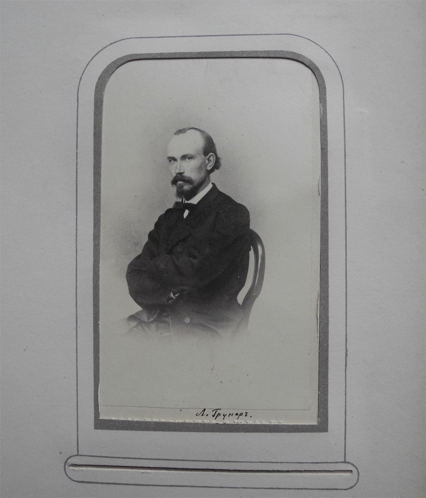

Русский ботаник Леопольд Федорович Грунер (1839 – ок 1917)
Грунер и МОИП
Л.Ф. Грунер был избран действительным членом МОИП 10 октября 1868 года.
Его работы были опубликованы в нескольких выпусках Бюллетеня МОИП:
- Bulletin of Moscow Society of Naturalists , IV, 1867, pp.380-463
- Bulletin of Moscow Society of Naturalists , III, 1868, pp.96-169
- Bulletin of Moscow Society of Naturalists , IV, 1868, pp.406-459
- Bulletin of Moscow Society of Naturalists , I, 1868, pp.280-294
- Bulletin of Moscow Society of Naturalists , I, 1872, pp.79-144

В архиве МОИП хранится его фотография, а также 15 писем (на немецком языке).
University Edition v 2.0